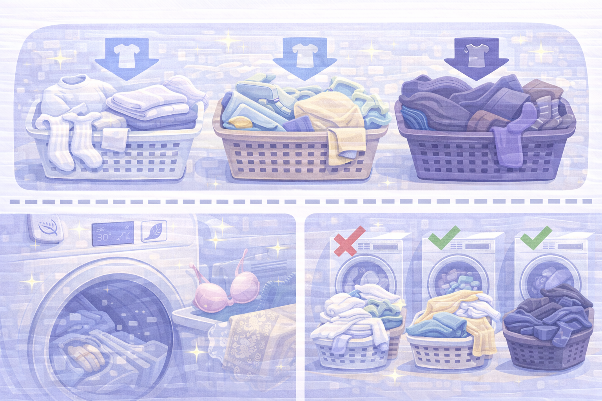
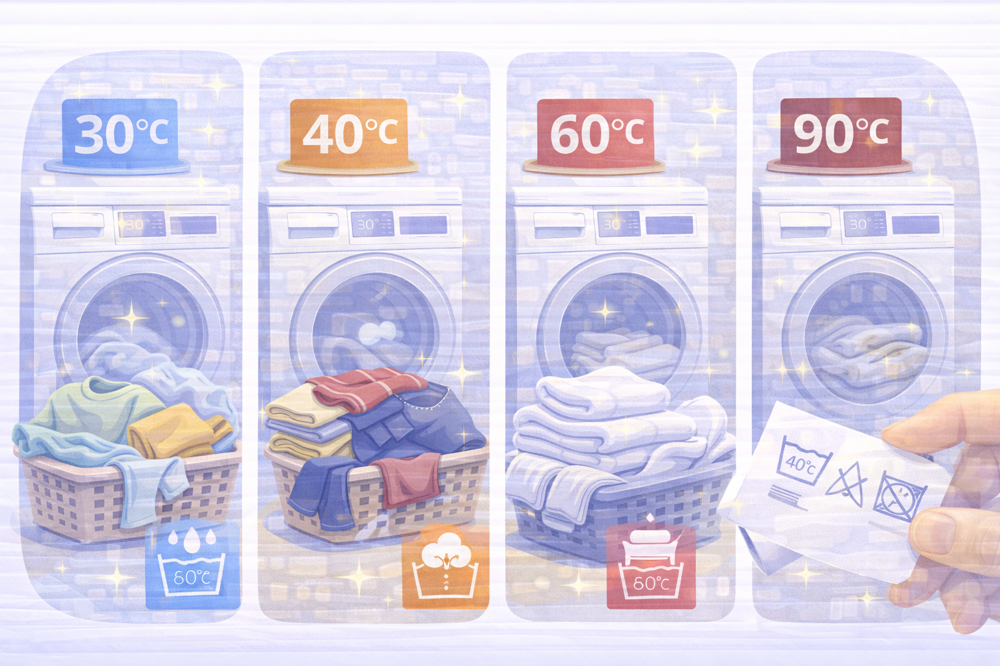
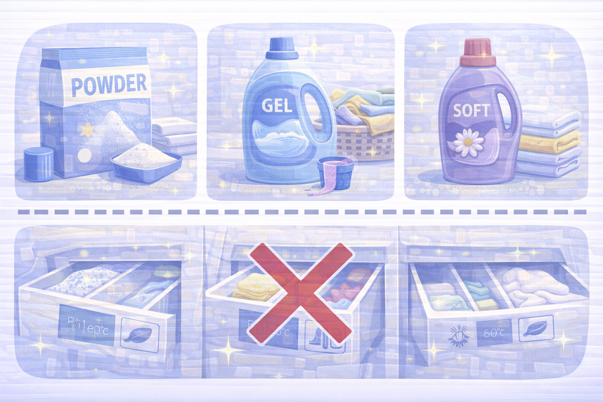

Прання
Як прати правильно: сортування, режими, температура і прості правила, що економлять час.

Сортування речей
Основне правило прання — сортувати одяг за кольором і типом тканини.
- Біле — окремо.
- Світле — окремо.
- Темне — окремо.
- Делікатні тканини — тільки на делікатному режимі.
Не змішуйте рушники, білизну, шкарпетки та футболки в одному завантаженні — це погіршує якість прання.

Температура прання
Температура залежить від матеріалу та кольору.
- 30°C — універсальний режим для кольорових речей.
- 40°C — спортивний одяг, бавовна.
- 60°C — рушники, постіль.
- 90°C — тільки для дезінфекції або сильно забруднених білих тканин.
Завжди перевіряйте ярличок на одязі — там вказано точний режим.

Засоби для прання
Занадто велика кількість порошку не робить прання кращим — лише забиває машину.
- Порошок — для білих і сильно забруднених речей.
- Гель — для кольорових тканин.
- Кондиціонер — додає м'якість, але не обов'язковий.
Ніколи не змішуйте різні засоби одночасно.

Сушка і догляд
Після прання важливо правильно висушити речі, щоб вони не зіпсувалися.
- Не залишайте речі в машинці — вони почнуть пахнути.
- Делікатні тканини сушіть горизонтально.
- Не пересушуйте бавовну — вона сідає.
- Періодично мийте фільтр пральної машини.